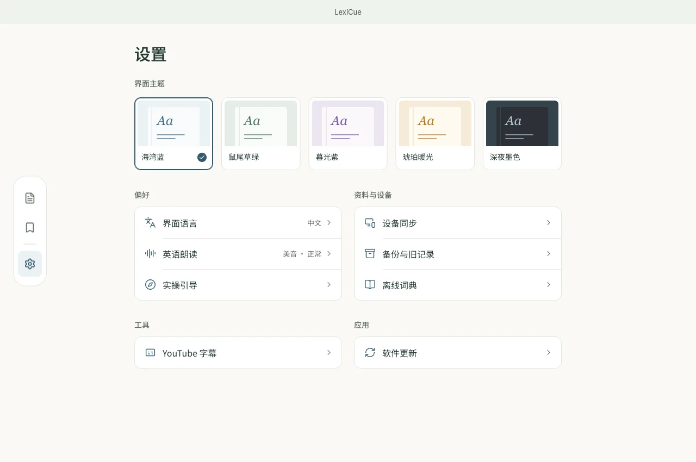
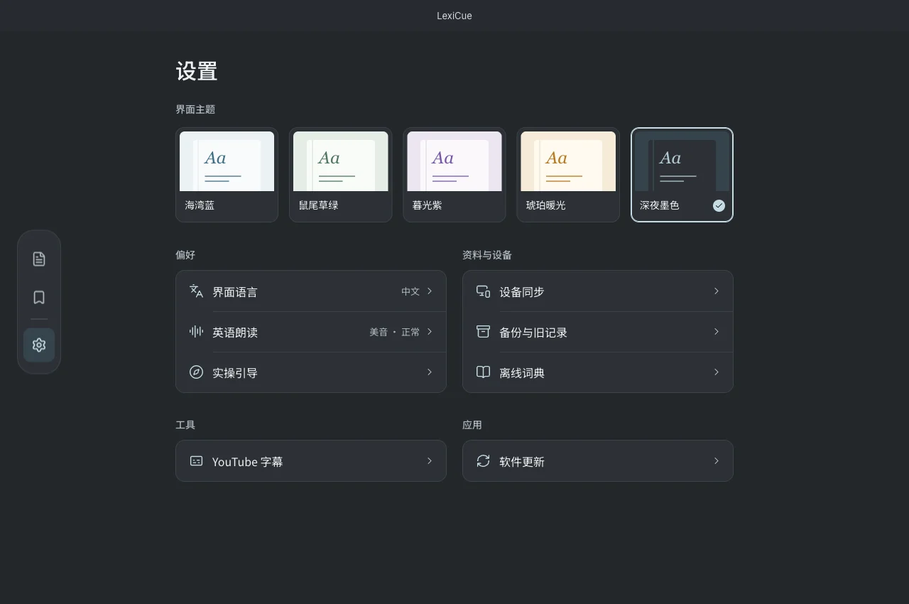

设置
Mac 与 iPhone 共用四组设置，具体操作随平台能力调整。
本页目录
偏好与外观
界面可选英语、中文、日语或德语，学习目标仍为英语。设置首页可选海湾蓝、鼠尾草绿、琥珀暖光、暮光紫、深夜墨色；字号控制放在阅读页。
“偏好”组还包含朗读偏好与重新查看首次引导。



配对 Mac 与 iPhone
- 将一台 Mac 与一台 iPhone 接入可互通的局域网，在两端打开“设置 → 设备同步”。允许本地网络访问，iPhone 扫码还需相机权限。
- Mac 显示临时二维码，iPhone 扫描；核对两端设备名和验证码，再分别确认，建立信任并合并两份本地资料库。
同步范围与恢复
同步正文、分句与时间轴、已有中文译文、语境收藏、注释、标签、阅读位置，以及相应修改和删除。媒体原件与设备偏好留在各自设备；Windows 与 Android 不支持本次 Apple 设备同步。
首次合并前两端分别创建可恢复备份。离线修改在重新连接后补齐，iPhone 需保持前台；Mac 可选择关闭窗口后继续接收。睡眠或隔离访客网络会影响连接。
需要时在设备同步中查看保留的其他编辑。移除设备会撤销信任，保留本地资料；可从设备管理恢复合并前备份。同步不能代替自己保存的备份。
资料：备份与词典
“备份”提供导出、恢复与历史记录；“词典”显示本地朗文及音频可用状态，不可用时可重试。在线查词来源需要联网。
词典义项
查词可保留当前词典结果的参考，它不代表已确认当前句子的含义。没有可用词条时，也能保存自己的解释。
工具：字幕
桌面提供浏览器会话偏好与依赖诊断；iPhone 使用公开英文字幕并提供清缓存。旧桌面会话偏好不会让 iPhone 获得登录态下载能力。
应用：软件更新
打开“应用 → 软件更新”。Mac 可检查可用更新，本地安装的 iPhone 构建显示版本、安装方式和更新说明；这不代表已在 App Store 或公开提供 iPhone 版本。